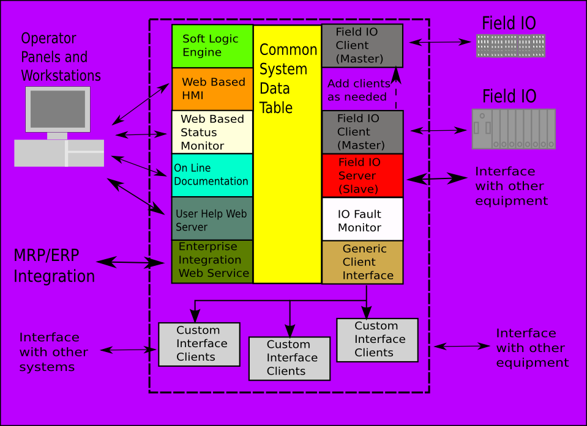

MBLogic
for an open world in automation
MBLogic
for an open world in automation
Help - General
Overview:
This system consists of a program containing a set of components, which cooperate through a shared data table (memory array). The systems include communications servers, communications clients, soft logic, and integrated on line help.
The number and type of components which are active is determined by a set of configuration files. The configuration files also control such things as protocols used, addresses, polling rates, and other factors.
Help Topic Details
- On Line Help System - Accessing on line help.
- System Data Table - The system (communications) data table.
- Creating Applications - Creating an Application.
- File Locations - Locations of System Files.
- System Capacity - Limits of System Capacity.
- User Help - User Created Help Pages
Block Diagram of System
